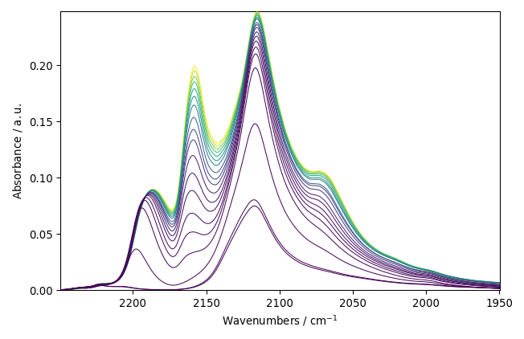
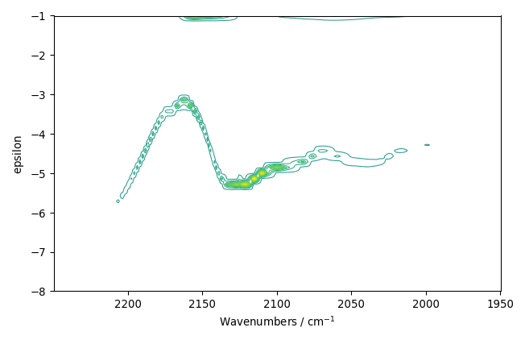
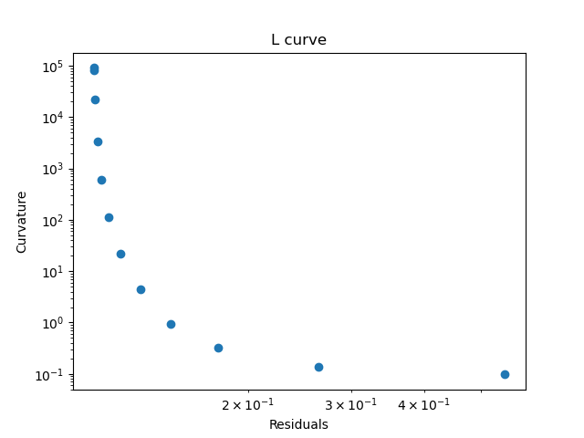
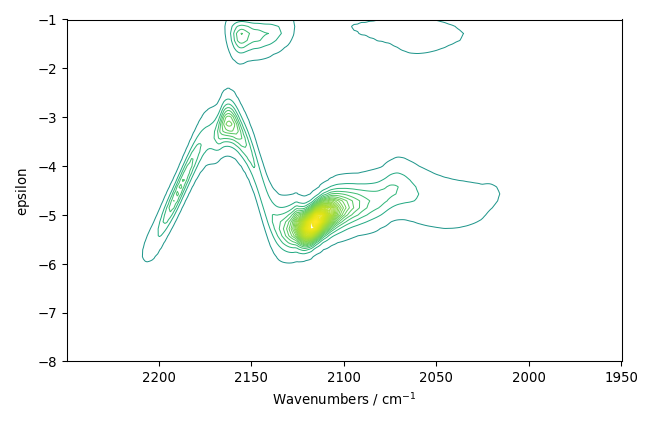
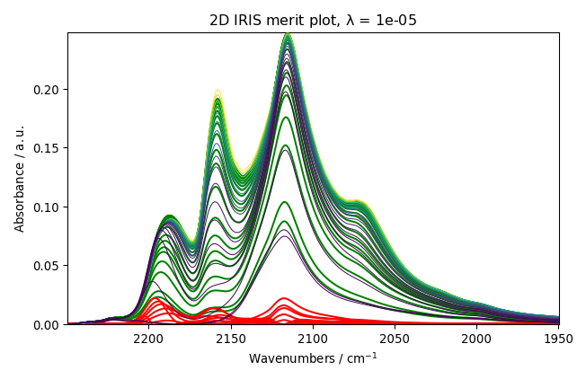
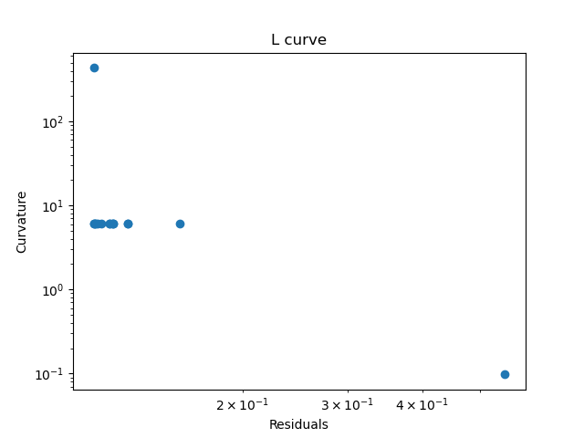
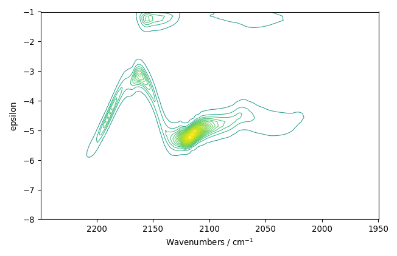
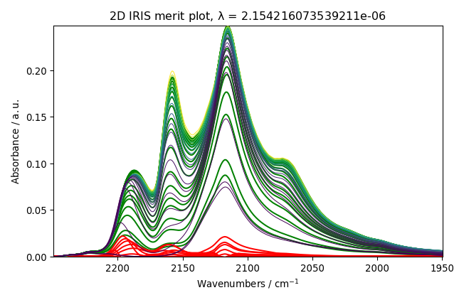

Note
Click here to download the full example code
2D-IRIS analysis example¶
In this example, we perform the 2D IRIS analysis of CO adsorption on a sulfide catalyst.
import os
import spectrochempy as scp
Upload dataset
X = scp.NDDataset.read_omnic(os.path.join('irdata', 'CO@Mo_Al2O3.SPG'))
X has two coordinates: wavenumbers named “x” and timestamps (i.e. the time of recording)
named “y”.
print(X.coordset)
Out:
CoordSet: [x:Wavenumbers, y:Acquisition timestamp (GMT)]
We want to replace the timestamps (“y”) by pressure coordinates.
Note: To replace a coordinate always use its name not the index (i.e. “y” in the present case) or update
method. See the API reference or our User Guide for more information on this.
p = [0.00300, 0.00400, 0.00900, 0.01400, 0.02100, 0.02600, 0.03600,
0.05100, 0.09300, 0.15000, 0.20300, 0.30000, 0.40400, 0.50300,
0.60200, 0.70200, 0.80100, 0.90500, 1.00400]
X.coordset["y"] = scp.Coord(p, title='pressure', units='torr')
Select and plot the spectral range of interest

Out:
<AxesSubplot:xlabel='Wavenumbers $\\mathrm{/\\ \\mathrm{cm}^{-1}}$', ylabel='Absorbance $\\mathrm{/\\ \\mathrm{a.u.}}$'>
Perform IRIS without regularization (the verbose flag can be set to True to have information on the running process)
Plots the results

Out:
[<AxesSubplot:title={'center':'2D IRIS merit plot, $\\lambda$ = 0'}, xlabel='Wavenumbers $\\mathrm{/\\ \\mathrm{cm}^{-1}}$', ylabel='Absorbance $\\mathrm{/\\ \\mathrm{a.u.}}$'>]
Perform IRIS with regularization, manual search
param = {
'epsRange': [-8, -1, 50],
'lambdaRange': [-10, 1, 12],
'kernel': 'langmuir'
}
iris = scp.IRIS(X_, param, verbose=False)
iris.plotlcurve()
iris.plotdistribution(-7)
iris.plotmerit(-7)



Out:
[<AxesSubplot:title={'center':'2D IRIS merit plot, $\\lambda$ = 1e-05'}, xlabel='Wavenumbers $\\mathrm{/\\ \\mathrm{cm}^{-1}}$', ylabel='Absorbance $\\mathrm{/\\ \\mathrm{a.u.}}$'>]
Now try an automatic search of the regularization parameter:
param = {
'epsRange': [-8, -1, 50],
'lambdaRange': [-10, 1],
'kernel': 'langmuir'
}
iris = scp.IRIS(X_, param, verbose=False)
iris.plotlcurve()
iris.plotdistribution(-1)
iris.plotmerit(-1)
# scp.show() # uncomment to show plot if needed (not necessary in jupyter notebook)



Out:
makes PD matrix
new curvature: C2 = -9.015364529989406e-11
makes PD matrix
new curvature: C2 = 0.0
makes PD matrix
makes PD matrix
new curvature: C2 = 2.1001323911181175e-07
makes PD matrix
makes PD matrix
new curvature: C2 = 0.0
makes PD matrix
makes PD matrix
new curvature: C2 = 2.3708957082300604e-09
makes PD matrix
makes PD matrix
[<AxesSubplot:title={'center':'2D IRIS merit plot, $\\lambda$ = 2.154216073539211e-06'}, xlabel='Wavenumbers $\\mathrm{/\\ \\mathrm{cm}^{-1}}$', ylabel='Absorbance $\\mathrm{/\\ \\mathrm{a.u.}}$'>]
Total running time of the script: ( 0 minutes 11.771 seconds)